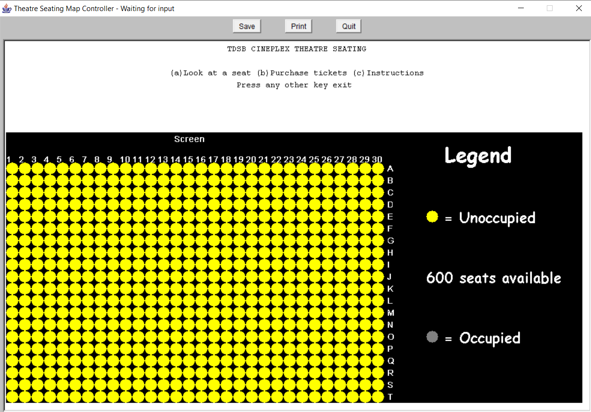

In 2018, my team of 5 drafted and presented a 20 page solution proposal in response to a given problem scenario.
Projects I've Worked On
University of Toronto Space Design Contest
Turing - ICS2O3 ISP
After learning my first programming language, Turing, I made a "Simon Says" game. The source code can be found on my github:
Java - ICS3U3 ISP
Evolving from the basics of Turing, I learnt the Java language in my grade 11 ICS course, where I made an program for managing theatre seating inside a 30 x 20 theatre seating map.
New concepts that were used in this project were file input/output, and 2d-array manipulation. The source code can be found on my github:
|  |
Competitve Programming
After learning Java, I began branching out into the world of competitve programming. Starting with basic problems on the DMOJ online problem site, I moved on to the school online judge WLMOJ. I am currently ranked 11th in our school, and a few of my solutions to very challenging problems can be found on my Github repository.
Java - ICS4U0 Final Project
For my final project in this course, Rohan K and I created a 3-level educational game on fire safety. It focused on fire safety, fire prevention, and fire fighting. Created in Java, this month long project allowed me to explore various Java classes such as Graphics, swing and awt libraries.